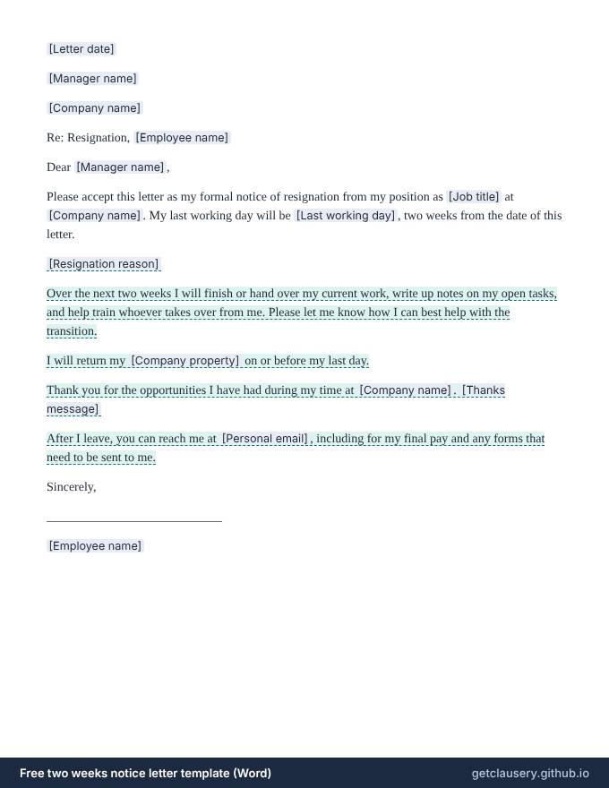

Two weeks notice letter template — free, editable .docx
A short, professional resignation letter giving two weeks' notice: your job title and last working day, an optional reason, an offer to help hand over your work, returning company property, a thank-you, and how to reach you after you leave.

Free, with unlimited documents and no sign-up. Your answers stay in your browser. Who it is for: Employees leaving a job on good terms who want to resign in writing with the usual two weeks' notice, without saying more than they need to.
Updated · Word (.docx) · Free to use and adapt
Need more than one? Download all 87 templates as one .zip file.
What is in the two weeks notice letter
- Date and manager
- Your job title and last working day
- Optional reason for leaving
- Optional offer to help with the handover
- Optional return of company property
- Optional thank-you
- Optional personal email for your final pay and forms
Read the full template
This is the complete wording. [Labels] are filled in from your answers, and highlighted text only appears when it applies; hover over it to see when.
[Letter date]
[Manager name]
[Company name]
Re: Resignation, [Employee name]
Dear [Manager name],
Please accept this letter as my formal notice of resignation from my position as [Job title] at [Company name]. My last working day will be [Last working day], two weeks from the date of this letter.
[Resignation reason]
Over the next two weeks I will finish or hand over my current work, write up notes on my open tasks, and help train whoever takes over from me. Please let me know how I can best help with the transition.
I will return my [Company property] on or before my last day.
Thank you for the opportunities I have had during my time at [Company name]. [Thanks message]
After I leave, you can reach me at [Personal email], including for my final pay and any forms that need to be sent to me.
Sincerely,
____________________________
[Employee name]
The questions you answer
Clausery turns the template into a short questionnaire. Optional parts only appear when they apply.
| Question | Type | Asked when |
|---|---|---|
| Letter date | Date | Always |
| Manager name | Short text | Always |
| Company name | Short text | Always |
| Employee name | Short text | Always |
| Job title | Short text | Always |
| Last working day | Date | Always |
| Has reason | Yes / no | Always |
| Resignation reason | Long text | If “Has reason” is yes |
| Will help handover | Yes / no | Always |
| Mention property return | Yes / no | Always |
| Company property | Short text | If “Mention property return” is yes |
| Include thanks | Yes / no | Always |
| Thanks message | Short text | If “Include thanks” is yes |
| Has personal contact | Yes / no | Always |
| Personal email | If “Has personal contact” is yes |
Prefer to start from your own wording? Download the Word file, edit it, keep the {tags}, and upload it to Clausery. See the template syntax.
Questions
Do I legally have to give two weeks' notice?
In the US most jobs are at will, and no federal law requires an employee to give notice; two weeks is a professional custom. Your contract or handbook may ask for more, so check it. In the UK the legal minimum is one week once you have worked for a month, and many contracts require longer.
Can my employer make today my last day?
In an at-will job, an employer can usually accept a resignation at once instead of having you work the notice period, and does not always have to pay for the two weeks. A contract, a company policy or local law may say otherwise.
What should I leave out of a resignation letter?
Complaints and criticism. The letter goes in your personnel file and may be seen when a future employer checks references, so keep it short and positive, and raise concerns in an exit interview if you want to.
Guide: How to write a two weeks notice letter (free template)
Free tool: Deadline calculator: your last day, two weeks from today
Related templates
Browse all 87 free templates by category
This template is a general sample and not legal advice. Laws vary by jurisdiction; have it reviewed before use.